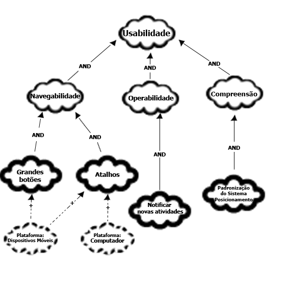

Framework NFR¶
Introdução¶
De acordo com (Serrano et. al, 2017), "trata-se de um framework conceitual para condução da Engenharia de Requisitos orientada aos requisitos não funcionais, com uma extensão que apoia suposições para avaliação de satisfação das metas-flexíveis".
Metodologia¶
Para o desenvolvimento de frameworks NFR, são necessários os requisitos não funcionais como base. * Com os requisitos não funcionais elicitados, analisa-se em sob qual tópico do FURPS+ os requisitos são agrupados; * A partir da análise, são realizadas frameworks de cada tópico, com estabelecimento de softgoals e associações de diversos tipos. * Por fim, a framework é, juntamente com um usuário ou Product Owner, julgada por labels que determinam o grau no qual os softgoals foram implementados ou podem ser cumpridos.
Os requisitos não funcionais foram elicitados pela equipe em entregas anteriores, com a necessidade adicional de tornar os requisitos mensuráveis para que possam ser propriamente analisados.
A tabela 1, a seguir, apresenta uma versão revisada dos requisitos não funcionais elicitados pelo projeto, a fim de torná-los mensuráveis e ajustá-los dentro do formato de requisitos não funcionais quando necessário.
Tabela 1 — Tabela com todos os requisitos não funcionais elicitados no projeto.
| Código | Tipo de Requisito | Descrição do Requisito | Foi implementado? | Origem |
|---|---|---|---|---|
| RE06 | Requisito não Funcional | A notificação de entregas futuras por meio do Calendário e Painel/Dashboard deve ser acessível por no máximo, um clique após fazer o login no sistema. | SIM | ENT17, ANA04, ANA11, ANA18 |
| RE20 | Requisito Não Funcional | A navegação do aplicativo mobile deve ter símbolos grandes e posicionados de maneira a tornar a navegação mais efetiva com um número menor de cliques, com uma média de 4 para o usuário chegar onde deseja. | NÃO | ANA15, ENT06 |
| RE22 | Requisito Não Funcional | O sistema deve ter um tempo de resposta menor ou igual a dois segundos para cada clique. | NÃO | ENT09 |
| RE24 | Requisito Não Funcional | Os arquivos enviados ao sistema devem possuir um limite máximo de tamanho. | SIM | ENT12 |
| RE25 | Requisito Não Funcional | A auto-compactação de arquivos deve ser mostrada ao usuário se os arquivos que deseja enviar excederem a capacidade máxima. | NÃO | ENT13 |
| RE31 | Requisito não Funcional | A barra de busca de turmas é localizável assim que o login é realizado, em tela cheia nos computadores e em orientação vertical e/ou horizontal em dispositivos móveis. | NÃO | ENC03 |
Fonte: Autores
A tabela 2, a seguir, denomina os tipos de softgoals abordados e alguns dos operadores utilizados para a relação entre eles. É de nota que foram incluídos apenas os elementos utilizados pela equipe; existem mais operadores que podem ser utilizados em uma framework NFR.
Tabela 2 — Siginificado dos elementos visuais de diagramas da Framework NFR.
| Imagem | Nome & Descrição |
|---|---|
| Softgoal NFR: Característica abstrata, a qual se deseja considerar na análise, visando saber se a mesma será cumprida ou não cumprida, ou seja, escolhida ou não escolhida para ser implementada (Serrano et. al, 2017). | |
| Softgoal de Operacionalização: Representa soluções de implementação que satisfazem softgoals NFR ou outros softgoals de operacionalização. Pode incluir operações, processos, estruturações e restrições no sistema. Representam as funcionalidades | |
 |
Softgoal de Afirmação: permitem que as características do domínio sejam consideradas e refletidas no processo de tomada de decisão. Servem como justificativa para apoiar ou negar a forma como os softgoals são priorizados, refinados e os componentes são selecionados. |
| AND | Operador AND: Implica que se os softgoals descendentes forem atendidos, os acendentes também serão. |
| + | Help (+): O softgoal filho com contribuição positiva parcial, que sozinho não chega a satisfazer o softgoal pai sob a perspectiva dos envolvidos (Serrano et. al, 2017). |
Fonte:Rodrigo Orlandi (Autor)
Por fim, após a realização dos diagramas da framework NFR, é necessária a revisão que determina o grau de cumprimento dos softgoals dentro de um software. Para o projeto, o grau de cumprimento analisado refere-se aos requisitos não funcionais implementados no projeto.
A tabela 3 a seguir demonstra os possíveis graus de cumprimento dos softgoals, determinados com base no conteúdo de (Serrano et. al, 2017).
Tabela 3 — Símbolos e significados respectivos dos graus de cumprimento de softgoals.
| Símbolo | Nome & Significado |
|---|---|
| Satisfeito: Pode ou é cumprido segundo a análise. | |
| Satisfeito (fraco): É parcialmente cumprido. | |
| Não decidido: A realização do softgoal não pode ser. confirmada ou negada. | |
| Recusado (fraco): Há indicadores que vão contra o softgoal. | |
 |
Recusado: O softgoal não é cumprido, segundo a análise. |
| Conflito: Existem indicadores positivos e negativos para o cumprimento do softgoal. |
Fonte: (Serrano et. al, 2017) (Adaptado).
Frameworks NFRs e Revisão¶
Foram desenvolvidas três frameworks NFR com base nos requisitos não funcionais elicitados pelo projeto, referente aos tópicos Usabilidade, Confiabilidade e Performance, originados do FURPS+. A tabela 4, a seguir, explica cada um dos tópicos em mais detalhes.
A escolha de três tópicos é explicada pela alocação dos requisitos não funcionais elicitados no projeto de acordo com o tópico que os melhor descrevem. A tabela 5, a seguir, demonstra a relação entre tópicos da FURPS+ e os requisitos não funcionais.
Tabela 4 — Tópicos de FURPS+ abordados pelos requisitos não funcionais do projeto.
| Título do Tópico | Descrição |
|---|---|
| Usabilidade | Refere-se à "eficiência, eficácia e satisfação com a qual os públicos do produto alcançam objetivos em um determinado ambiente", de acordo com a ISO 9241-11:2018. |
| Perfomance | Refere-se à capacidade do sistema de executar programas dentro de padrões como dentro de certos períodos de tempo, a eficácia de como consegue aproveitar o tempo para um certo número de execuções, entre outros. |
| Confiabilidade | Refere-se à capacidade do sistema de funcionar corretamente, de forma que evite ao máximo erros e brechas de dados dentro de sua execução. |
Fonte:Rodrigo Orlandi (Autor)
Tabela 5 — Relação de tópicos do FURPS+ com RNFs elicitados anteriormente no projeto.
| Tópico FURPS+ | RNFs alocados |
|---|---|
| Usabilidade | RE06, RE20, RE31 |
| Perfomance | RE22 |
| Confiabilidade | RE24, RE25 |
Fonte:Rodrigo Orlandi (Autor)
Frameworks NFR desenvolvidas¶
As figuras 1 a 3 a seguir apresentam as Frameworks NFRs desenvolvidas pelo grupo.
Figura 1 — Framework NFR de Usabilidade, acerca dos requisitos não funcionais elicitados.

Fonte: Rodrigo Orlandi (Autor)
Figura 2 — Framework NFR de Confiabilidade, acerca dos requisitos não funcionais elicitados.

Fonte: Rodrigo Orlandi (Autor)
Figura 3 — Framework NFR de Performance, acerca dos requisitos não funcionais elicitados.

Fonte: Rodrigo Orlandi (Autor)
Revisão¶
Após a realização das três NFRs, é necessário analisar todas de forma a verificar quais softgoals podem ser ou foram cumpridos pelo software. Para a análise, é necessário a presença de um cliente do software ou de um Product Owner, se estiver sendo trabalhada a metodologia Scrum.
A gravação a seguir apresenta a revisão feita com um usuário do aplicativo Moodle.
As figuras 4 a 6, a seguir, apresenta a versão revisada dos NFRs após discussão com o cliente, demonstrando o grau no qual os softgoals foram cumpridos.
Figura 4 — Framework NFR de Usabilidade revisado, levando em consideração RNFs implementados e opinião do cliente.

Fonte: Rodrigo Orlandi (Autor)
Figura 5 — Framework NFR de Confiabilidade revisado, levando em consideração RNFs implementados e opinião do cliente.

Fonte: Rodrigo Orlandi (Autor)
Figura 6 — Framework NFR de Performance revisado, levando em consideração RNFs implementados e opinião do cliente.

Fonte: Rodrigo Orlandi (Autor)
Referências¶
| # | Fonte |
|---|---|
| 1 | SERRANO, Milene. SERRANO, Maurício. Requisitos - Aula 17. UnB Gama (FCTE). Disponível em: https://aprender3.unb.br/pluginfile.php/2972516/mod_resource/content/1/Requisitos%20-%20Aula%20019a.pdf. Acesso em: 17/12/2024. |
| 2 | ISO 9241-11:2018. Disponível em: https://www.iso.org/standard/63500.html. Acesso em: 17/12/2024. |
Histórico¶
| Versão | Descrição | Autor | Revisor | Revisado | Data |
|---|---|---|---|---|---|
| v1.0 | Página Criada | Rodrigo Orlandi | Laís Cecília | 17/12/2024 |